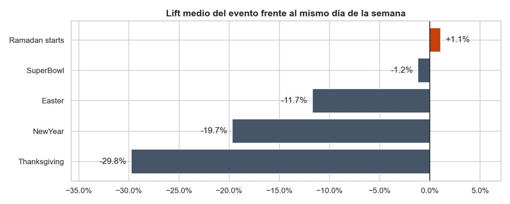

Proyecto de fin de grado
TimeCP
Aplicación web para que una empresa controle la jornada de su plantilla. Los empleados fichan entrada, pausas y salida, y solicitan ausencias con su justificante. El administrador gestiona usuarios, horarios, cambios de turno y días festivos, y revisa todo desde su panel.
- API REST en Express 5 organizada por módulos: login, usuarios, horario, fichaje y ausencias
- Base de datos MySQL con 6 tablas y un esquema idempotente que crea o repara las tablas al arrancar sin borrar datos
- Autenticación con JWT en cookie httpOnly y contraseñas cifradas con bcrypt
- Seguridad: Helmet con CSP, rate limiting y protección CSRF
- Desplegada en Render con endpoint de salud
/api/health y usuarios de prueba automáticos
Node.jsExpressMySQLJWTRender
Entrada08:59
Pausa14:00 – 14:30
Salida17:32
Horas hoy8h 03m
DSMarket · Análisis de ventas

Proyecto final del máster de Data Science & AI: análisis de 58 millones de registros de ventas de 3.049 productos en 10 tiendas durante 5 años, para sacar decisiones de negocio.
- Todo el dataset en memoria sin muestrear, gracias a tipos compactos y a trabajar en formato ancho
- Descubre que los festivos reducen las ventas hasta un 30% al compararlos con el mismo día de la semana
- Mide el efecto real de los descuentos por producto: +28% de ventas en alimentación
- Clasificación de la demanda Syntetos-Boylan y segmentación K-Means en 5 tipos de producto
Pythonpandasscikit-learnK-MeansData Science
Máster Data Science & AI · Prácticas
Ejercicios y entregables del máster en Nuclio Digital School, de los fundamentos de Python a la preparación de datos para modelos.
- EDA y limpieza de un dataset de películas de IMDB: duplicados, nulos y tipos de datos
- Entregable de Data Engineering sobre precios de coches BMW: selección de variables, tratamiento de nulos y visualización
- Prácticas de NumPy, pandas y control de flujo
PythonpandasNumPyseabornJupyter
Gmail Cleaner
App web para vaciar una bandeja de Gmail saturada en unos clics. Buscas por categorías, revisas los resultados y los mandas a la papelera en bloque.
- 15 filtros listos: promociones, newsletters con "darse de baja", pedidos, paquetería (DHL, GLS, Correos), Vinted, Wallapop, Amazon…
- Nunca toca los correos destacados, y lo borrado va a la papelera, así que se puede recuperar
- Permite conectar varias cuentas de Gmail con OAuth 2.0 y cambiar entre ellas
- Acceso protegido con contraseña y preparada para desplegar en Render con disco persistente para los tokens
PythonFlaskGmail APIOAuth
Balance Mensual
"Ticket" mensual para controlar la economía personal: apuntas la nómina y los gastos, y ves el balance del mes de un vistazo.
- Ingresos y gastos por categorías, con resumen de gasto por categoría
- Navegación entre meses; los datos se guardan en el navegador con
localStorage
- Panel de mercado con datos en tiempo real de la API pública de CoinGecko
- Un solo archivo HTML sin frameworks ni dependencias
JavaScriptHTMLCSSAPI REST
Scripts de automatización
Userscripts para Tampermonkey que automatizan tareas repetitivas en redes sociales, como borrar cientos de favoritos de TikTok o limpiar listas de YouTube.
- Panel flotante con botones Iniciar y Parar y contador de elementos eliminados
- Detecta el estado del botón de favorito y comprueba que el cambio se ha aplicado antes de pasar al siguiente vídeo
- Intenta recuperarse cuando encuentra publicaciones tipo carrusel
- Incluye una página que copia el script con un clic y guías de instalación paso a paso
JavaScriptTampermonkeyDOM
Mini-proyectos en Python
Colección de programas de consola: Sudoku, Ahorcado, Piedra-Papel-Tijera, calculadora y generador de contraseñas.
Python
DAM · 2.º curso
Prácticas de acceso a datos, desarrollo de interfaces, programación de procesos y servicios y programación multimedia.
JavaJDBCAndroid
DAM · 1.er curso
Ejercicios de bases de datos, programación en C y lenguajes de marcas.
SQLCHTML/XML